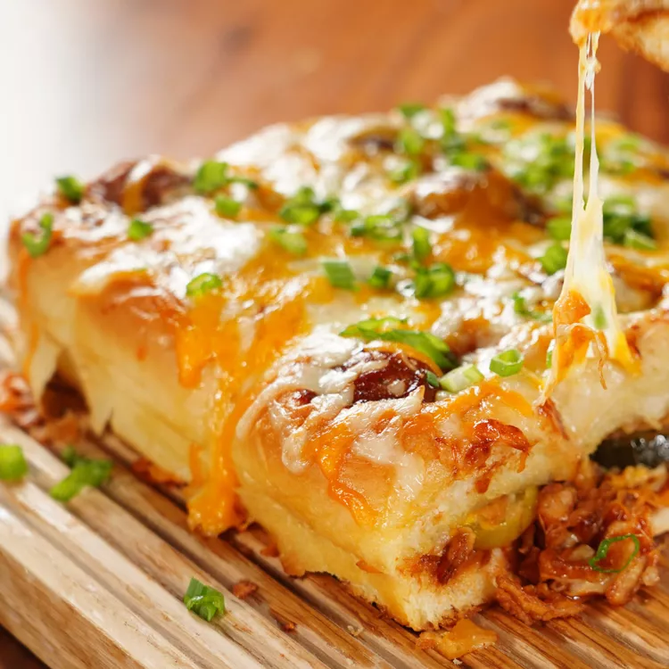

BBQ meatball sliders

These BBQ meatball sliders on Hawaiian rolls that will be the hit of the party! Hearty and full of flavor,
this is the perfect heavy starter for a Super Bowl party.You can easily double or triple the recipe.
Nutrition Facts: [per serving] it contains 484Calories ,
12gFat ,62gCarbs ,19gProtein
Ingredients:
12 frozen 1-inch party meatballs.
1 [18ounce] bottle BBQ sauce.
1 [12count] package Hawaiian bread rolls.
3 tablespoons butter, melted,divided.
1 cup shredded sharp cheddar cheese.
1 cup shredded monterey jack cheese.
12 dill pickle slices.
1/2 cup crispy onion strips.
3 tablespoons sliced green onions.
Steps and Directions:
- Step 1:
Preheat the oven to 350 degrees F [175 degrees C]
- Step 2:
Combine meatballs and barbecue sauce in a small sauce pan and bring to a slimmer over medium heat.
Reduce heat to medium-low and simmmer 10 minutes or until the meatballs are heated through.
- Step 3:
Slice rolls in half lengthwise, leaving the rolls connected to one another.Brush some butter to
make a light coating on the bottom of a 9*13 baking dish and place the bottom half of the rolls
in the dish, with the cut side facing up. set remaining butter aside.spoon out some of the bbq
sauce from the sauce pan and spread lightly over the bread.
- Step 4:
Combines cheddar cheese and monterey jack cheese in a bowl and sprinkle 1/2 of cheese mixture
over the sauce.Top with pickles and sprinke evenly with onion strips.
- Step 5:
Use a 1-inch cookie cutter,or a small knife, to cut a small 1 inch hole into the tops of each roll.
Place top half of rolls over the onion strips.stir garlic powder into remaining melted butter and
brush the mixture over the rolls, allowing any excess to drip into the cut out spaces. spoon one
meatball and about 1 teaspoon of sauce into the holes on each roll.sprinkle with remaining cheese.
- Step 6:
Cover with foil and bake in the preheated oven untill cheese is melted throughout, uncovering
halfway through, for about 20 minutes. Sprinkle with green onions.